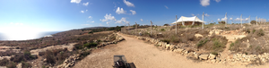

Water resources for the Neolithic Ħaġar Qim – Mnajdra cluster
https://www.researchgate.net/publication/your-article
© Ronald Poell
Creative Commons Attribution 4.0 International License

Figure 1: Panoramic view of Ħaġar Qim (right) and Mnajdra (left) in their landscape (040377).
Figure 2: Location of the relevant archaeological sites. (057425).
Figure 3: Il-Misqa plateau and the tanks. (057389)
Figure 4: Overview of water flow zones and the associated tanks of the Il-Misqa site (057395).
Figure 5: View from T3 into T4 showing the reflexion of the sky through the opening of T3. (042614)
Figure 6: Illustration of the micro-topography of the site. In the foreground T1. In the background the slab of T3 (right) and the ones from T4 (left). (044435)
Figure 7: Features around T1. (057390)
Figure 8: Features around T2. (057391)
Figure 9: Features around T3. The flow arrows between T3 and T4 are surface flows. These tanks are connected below the surface. (057392)
Figure 10: Features around T4. The flow arrows between T3 and T4 are surface flows. These tanks are connected below the surface. (057393)
Figure 11: Features around T5. (057394)
Figure 12: Zammit's photo of 1927 of T6 and T7. Orange arrows: the 2 blocks that have disappeared. Blue arrow: the missing hole H06. Yellow arrow: something in T6 that is not there anymore. (057387)
Figure 13: Situation in 2025 for comparison with the photo of 1927. (057087)
Figure 14: Picture from the same point as Ugolini's photo of 1937 (not reproduced here). (057086)
Figure 15: Tool marks in C10. Flow direction to the right. (044560)
Figure 16: Tool marks in C08. Flow direction to the right. (057172)
Figure 17: Top left T2. C09 (bottom) is joining C10. Notice the surface of C10 between T2 and the junction. Flow direction to the right. (057388, 044563, 044562)
Figure 18: Leakage gutter G24 between the zone Z-T5 and Z-T3-T4. T4 is visible on the top left.(044464)
Figure 19: Central hole H06 surrounded by a U-shaped gutter G13. Possibly a bird trap. (044507)
Figure 20: T-shaped hole surround by an U-shaped canal. In the SW of the plateau. Not surveyed. Possible bird trap. (042627)
Figure 21: Example of a group of gutters in Z-South (non surveyed). Possibly for stimulating root development to the depression in the top and right. (042623)
Figure 22: Lining with cemented small stones on the wall of T1. (057166)
Figure 23: Chemical erosion in H06. (057074)
Figure 24: T6. Smoothness of the top border of the tank compared with the tool marks in the widening part (057397, 042617, 042619)
Figure 25: T4 and its slabs. (057403)
Figure 26: T1, tool marks on the slabs. A: S2 (044565); B: S1 (044576); C: S7 (057132); D: S3 (057135). (057402)
Figure 27: T4, half wedge holes on the slabs. A 5.5 holes on S1 (044582); B one hole on S5 and two on S3 (042601); C for comparison HQMA-1015 in the area between Ħaġar Qim and Mnajdra. (057404)
Figure 28: T4, D11 below the slabs showing the original space prepared for the slabs (057152, 057159 , 057154). (057401)
Figure 29: T3-S1 modern tool marks. (057400)
Figure 30: T7 cover slab (T7-S1) resting on blocks, the central hole with its plug and the tool marks on the south-eastern side (044496)
Figure 31: T7. Slab S1 resting on some small stones to calibrate the horizontality of the slab. (057250)
Figure 32: T6 border features. Inset: detail of possible rope wear gutters (044494, 044607). (057399)
Figure 33: Geological map of Wied Ħoxt and Wied Iż-Żurrieq.(057406)
Figure 34: Wied Ħoxt catchment area of the head of the valley, Il-Maqluba and the Mqabba-Iż-Żurrieq perched aquifer. (057405)
Figure 35: Wied Ħoxt. Observed features at the valley head. (057424)
Figure 36: Dry stone wall at the departure of the Wied Ħoxt. To the left and in the middle two perpendicular blocks sticking out of the wall - header-stretcher technique. View direction upstream. (041602 - WH-1000)
Figure 37: Detail of the left header (in the centre) (041603)
Figure 38: Detail of the right header (on the left) (041604)
Figure 39: Upstream view of the bedrock in the Wied Ħoxt (041601 - WH-1001)
Figure 40: View downstream of the Wied Ħoxt showing the transverse megalith (WH-1002), the chaotic section behind it and in the top right the dolmen-like structure (WH-1003) (041592)
Figure 41: Dolmen-like (WH-1003) structure on the right bank as seen from the riverbed (041600)
Figure 42: View from the right bank on the crossing (WH-1004) in the Wied Ħoxt. The right side of the picture is downstream (043880)
Figure 43: View upstream of the crossing from the left bank. In the middle a block with cut marks can be seen. The insert shows details of the marks. In the back the dolmen-like structure (WH-1003) is visible (043887, 043888). (057398)
Figure 44: Cistern HQMA-1024 to the south of Ħaġar Qim. Inset: tool marks (042537, 042541). (057396)
Figure 45: View to the north-east. Southern part of the wall HQMA-1025. The cistern (HQMA-1024) is immediately to the bottom left of the image. The shelter of Ħaġar Qim is visible in the top right. (042542)
Figure 46: View to the south-west. Northern part of the wall HQMA-1025. The bush marks the position of the cistern HQMA-1024. (042543)